Process reward models for masked diffusion
DPRM
A Plug-in Token-Ordering Module for Discrete Diffusion Models
*Corresponding authors
Confidence is an efficient token-order heuristic, but local certainty can be myopic. DPRM uses terminal utility to decide which position should be committed next.
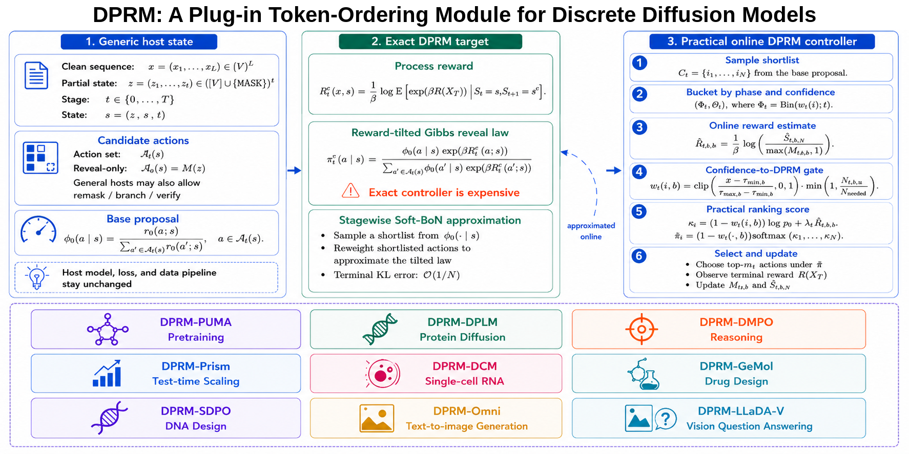
Omni-Diffusion
One token-order change alters the image trajectory
Both rows share the same canvas through step 95. At step 96, confidence commits its lowest-entropy position; DPRM selects a lower-confidence position with higher estimated terminal value.
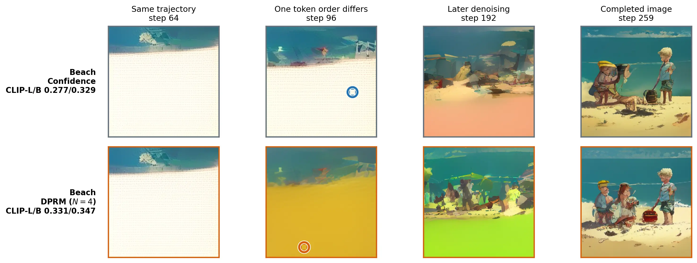
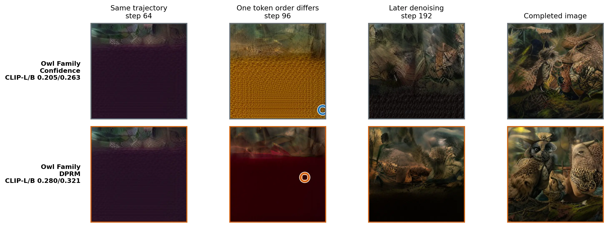
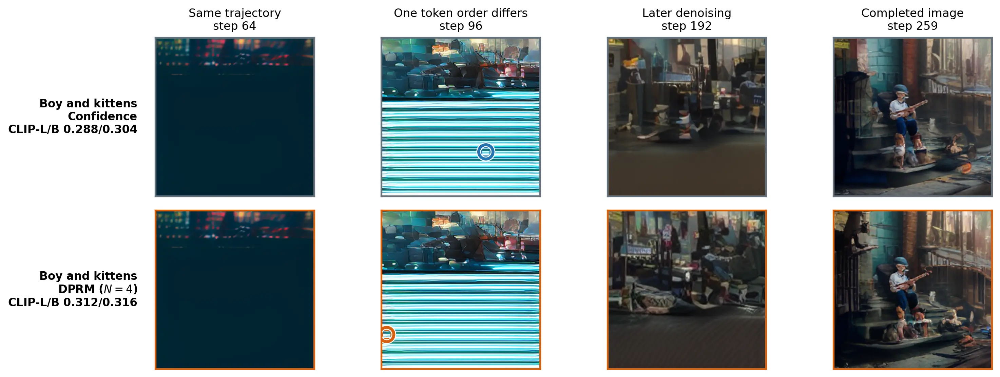
512 untouched prompts. Paired 95% intervals for both improvements exclude zero.
Frozen confirmation split
Four-policy image gallery
Random order, Omni default, a deterministic uniform order, and DPRM use matched generation settings. These reader-selected cases emphasize visual quality and prompt fidelity; they are displayed only after the controller and aggregate evaluation were frozen.
LLaDA-V · RealWorldQA
Order preserves the context needed for a count
The strict numeric/count interval has seven DPRM-only wins and no losses. In six wins, DPRM exposes the object word before the first numeric token; confidence often commits a leading 1 and completes it as 10.
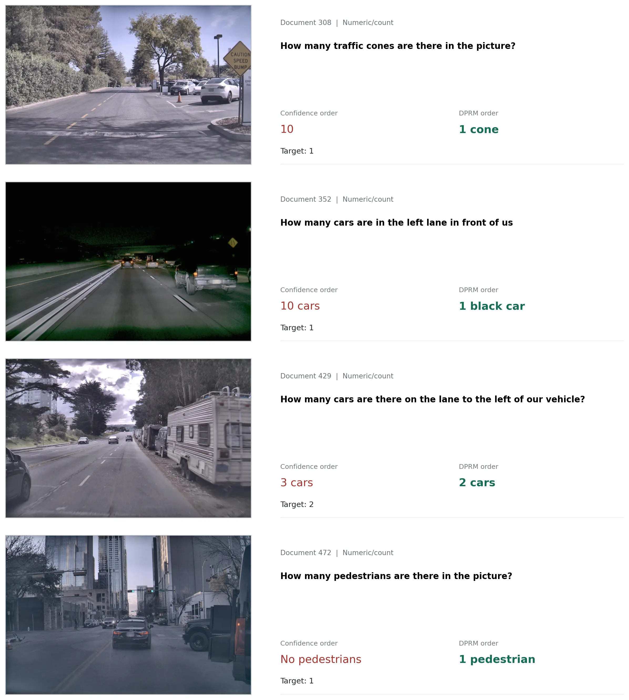
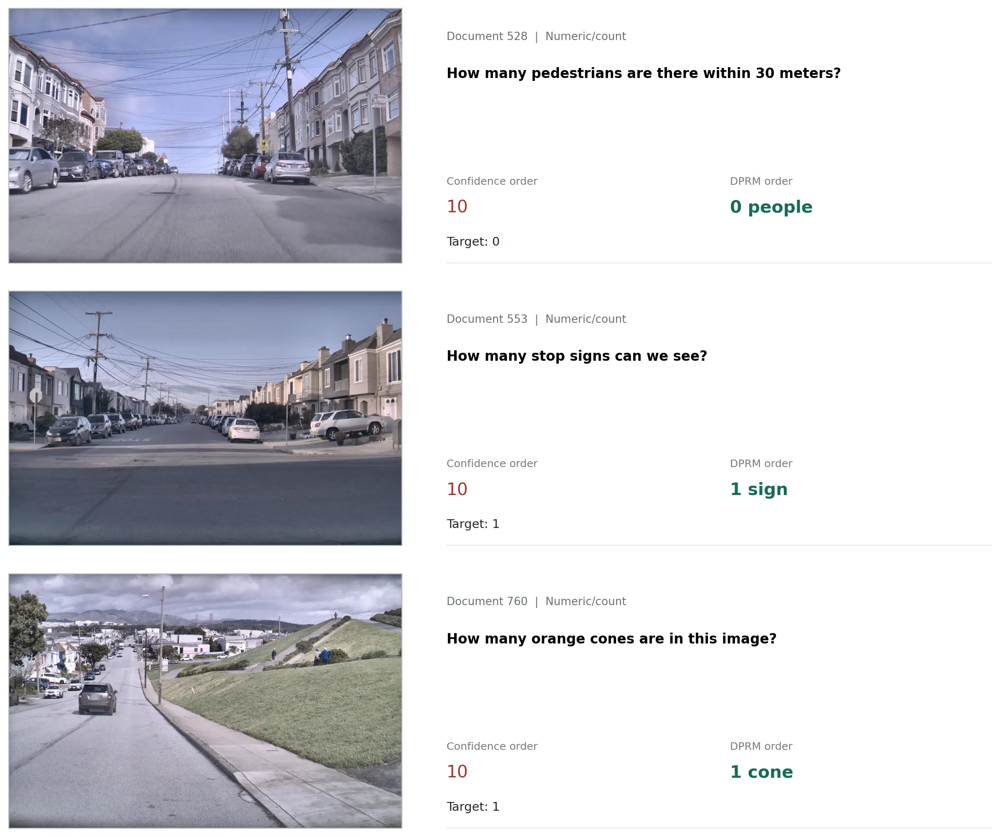
Nine host settings
Ordering gains across modalities
Seven hosts use the same denoiser-call budget as confidence. Prism estimates verifier-conditioned values during test-time search, while Omni uses five continuations from the current canvas because values learned from earlier prompts did not transfer reliably across unrelated images.
Saved trajectories and controls
What changes when order changes?
Entropy-only and random-order controls do not reproduce the gains. The saved traces instead test whether terminal reward identifies useful uncertain positions rather than merely preferring uncertainty.
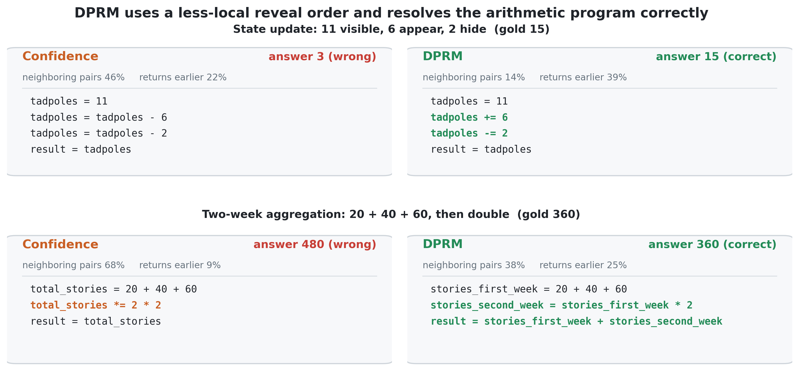
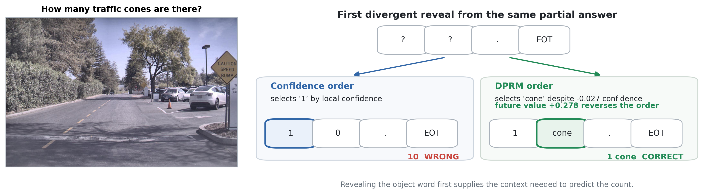
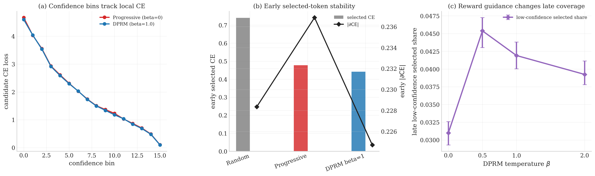
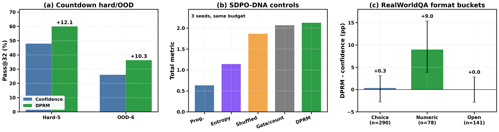
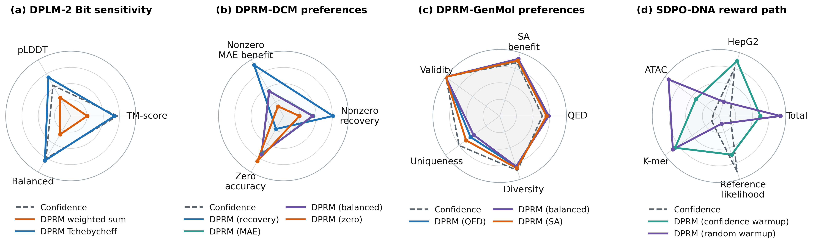
Reproducibility